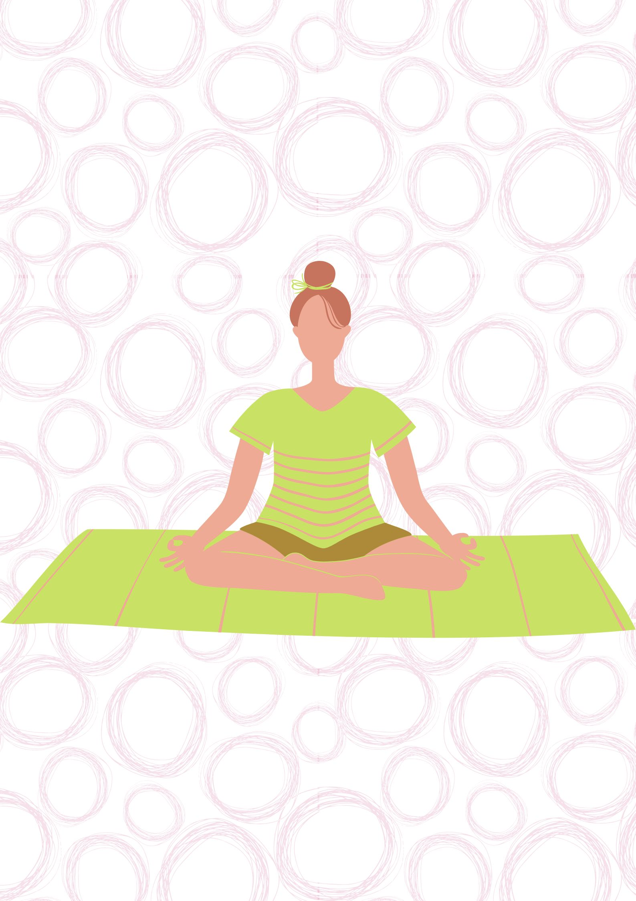

Shantam
Shantam means inner peace
Shantam is a state of being mentally and spiritually at peace.
Shanti mantra is chanted for invokig peace ad is widely used in Hindusism and religions like Buddisism and Jianisism.
Practice of Shantam :-
* Daily chant OM mantra for atleast 50 times.
( OM is the king of mantras and is the sound of universe. It is an imensly plesurable sound)
 By:-
By:-
Ananya Venkataraman - VIII D
Adithi C - VIII B
Sai Jasvitha - VIII B
Links:-
Home
Satyam
Dharmam
Shantam
Premam
Ahimsa
Brahmacharya
 Satya
Dharmam
Shantham
Premam
Ahimsa
Bhramacharya
Satya
Dharmam
Shantham
Premam
Ahimsa
Bhramacharya